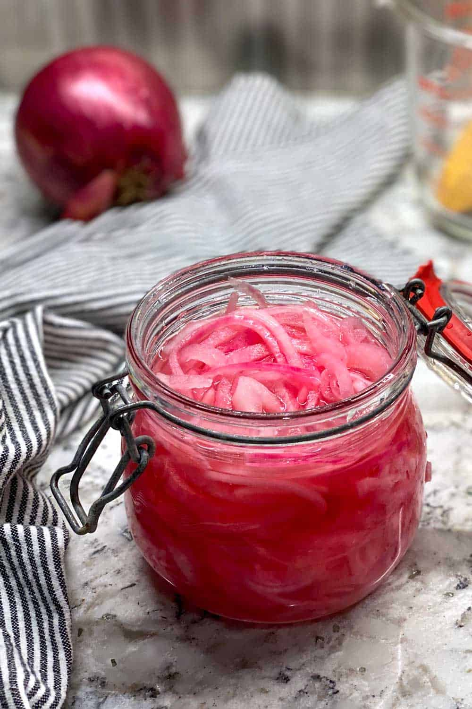

הסיפור שמאחורי הבצל
הכל התחיל מאהבה גדולה למטבח, לטעמים עזים ולתוספות שמשדרגות כל מנה מפשוטה למדויקת. הבצל המוחמץ שלנו מיוצר בעבודת יד מוקפדת, תוך שימוש בחומרי הגלם הטריים והאיכותיים ביותר בלבד.

על הפרויקט והמפתחים
האתר עוצב ופותח על ידי ליאל אגרונוב ורועי אלחדף.
הפיתוח נעשה במסגרת פרויקט הסיום בקורס "פיתוח אתרי אינטרנט" (13304) בשנה א', תשפ"ו, בפקולטה לטכנולוגיות למידה ב-HIT - מכון טכנולוגי חולון.